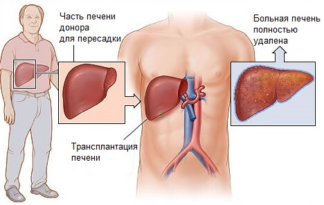

Онкологические заболевания. Следует уточнить, что трансплантация печени при раке показана тогда, когда опухоль расположена только в печени и метастазы в других органах не выявлены.
Острая печеночная недостаточность — например, вследствие отравления.
Вирусные гепатиты (кроме гепатита А) в тяжелой форме.
Гемохроматоз — нарушение метаболизма, при котором железо начинает откладываться в клетках печени и препятствует ее нормальной работе.
Цирроз печени на поздних стадиях, особенно если есть риск печеночной комы.
Болезнь Вильсона-Коновалова — заболевание, при котором из-за нарушений метаболизма поражается печень и некоторые другие внутренние органы.
Цирротическая форма муковисцидоза.

Необходимые условия для донора печени:
Возраст от 18 до 60, и согласие донора на донорство
Донор должен быть родственником реципиента до 4 степени
Группа крови донора должна быть совместима с группой крови реципиента
Донор не должен иметь проблем со структурой и функцией печени, и с общим состоянием здоровья
Анатомия печени донора должна быть соответствующей для печени реципиента.
Статистика:
Пятилетняя выживаемость рецепиента после пересадки печени составляет примерно 70%. Около 40% пациентов после такой операции живут 30 лет и дольше.
Если есть вопросы, мы будем рады ответит.
Телефон и Whatsapp: +996 707 08 70 07, +9188 00 478 229 Э-почта: shinonkg@gmail.com